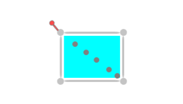
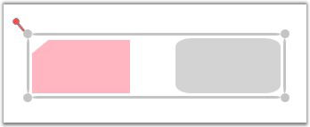

The following steps demonstrate how to specify a Node or Node with Ports in SymbolPaletteItem:
1. To add more than one port, a node is created.
2. Then several ports are added to it.
3. Create a SymbolPaletteItem and add the node as content for the SymbolPaletteItem.
At runtime, Nodes that are added in SymbolPalette can be dragged and dropped on the page. All the ports, and their properties will be cloned and a new copy of the node will be created.

Figure 197: Node with several Ports
To Create a new Node
|
Node node = new Node(); node.Width = 100; node.Height = 100; node.OffsetX = 200; node.OffsetY = 200; node.Background = new SolidColorBrush(Colors.Aqua); AddMorePorts(node); |
To add more Ports
|
private void AddMorePorts(Node node) { Left=10; Top=10; for (int i = 0; i < 4; i++) { ConnectionPort port = new ConnectionPort(); port.Left = Left; port.Top = Top; port.Node = node; node.Ports.Add(port); Left += 10; Top += 10; } }
|
Creating Groups and SymbolPaletteItems
|
[C#]
SymbolPaletteGroup group = new SymbolPaletteGroup(); group.Label = "Custom"; SymbolPalette.SetFilterIndexes(group, new List<int>()[] { 0, 6 })); dc.SymbolPalette.SymbolGroups.Add(group); SymbolPaletteItem item = new SymbolPaletteItem(); // Node added as SymbolPaletteItem's Content item.Content = node ; group.Items.Add(item);
|
Define Group definition in SymbolPalette
The groups can be given as SymbolPaletteItem’s content. At runtime, they can be Dragged and Dropped to create a clone of the group and its children will be added on the page.

Figure 198: To Drag and Drop Groups
To create new Node and Groups
|
[C#]
public DiagramControl Control; public DiagramModel Model; public DiagramView View; public Window1 () { Control = new DiagramControl (); Model = new DiagramModel (); View = new DiagramView (); Control.View = View; Control.Model = Model; View.Bounds = new Thickness(0, 0, 1000, 1000);
Node n = new Node(Guid.NewGuid(), "Start"); n.Shape = Shapes.FlowChart_Card; n.Level = 1; n.OffsetX = 150; n.OffsetY = 25; n.Width = 150; n.Height = 75; Node n1 = new Node(Guid.NewGuid(), "End"); n1.Shape = Shapes.RoundedRectangle; n1.Level = 1; n1.OffsetX = 350; n1.OffsetY = 325; n1.Width = 100; n1.Height = 75; Model.Nodes.Add(n); Model.Nodes.Add(n1);
Group g = new Group(Guid.NewGuid(), "group1"); g.AddChild(n); g.AddChild(n1); Model.Nodes.Add(g); } |
To create new SymbolPalette Group and Item
|
[C#]
SymbolPaletteGroup group = new SymbolPaletteGroup(); group.Label = "Custom"; SymbolPalette.SetFilterIndexes(group, new List<int> ()[] { 0, 6 })); dc.SymbolPalette.SymbolGroups.Add(group); SymbolPaletteItem item = new SymbolPaletteItem(); // Group added as SymbolPaletteItem's Content item.Content = g ; group.Items.Add(item);
|
Refer to 4.1.1.1 Adding Through SymbolPalette